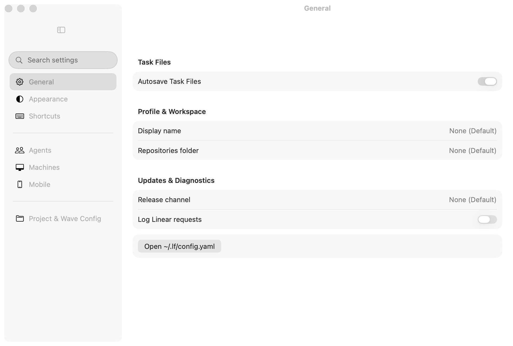
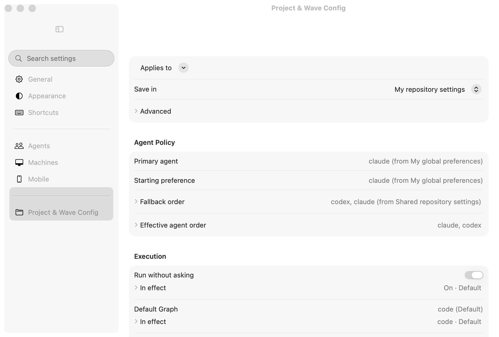
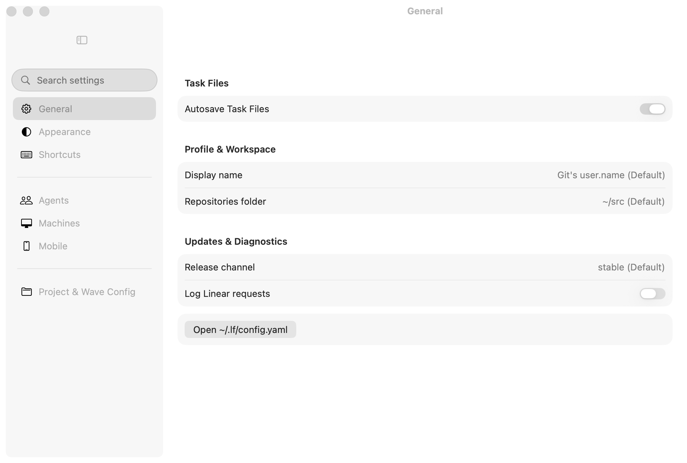
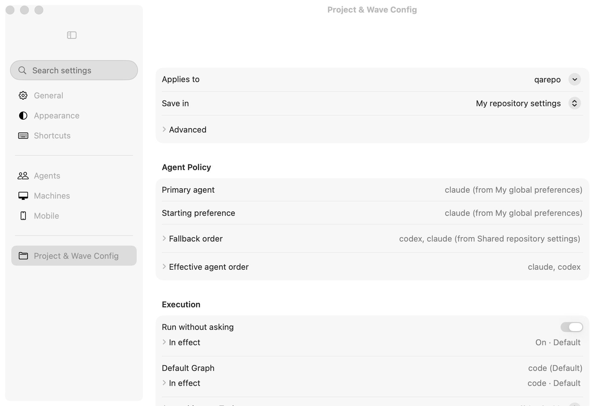
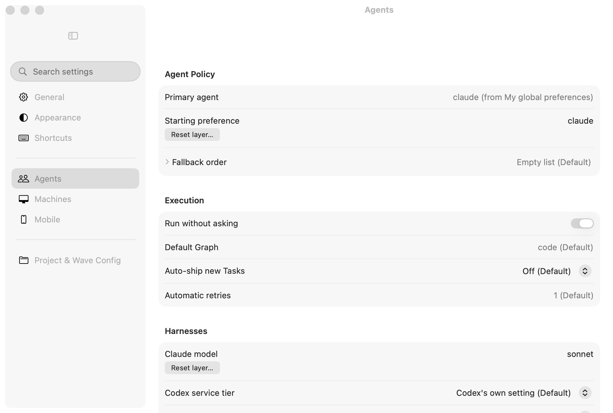
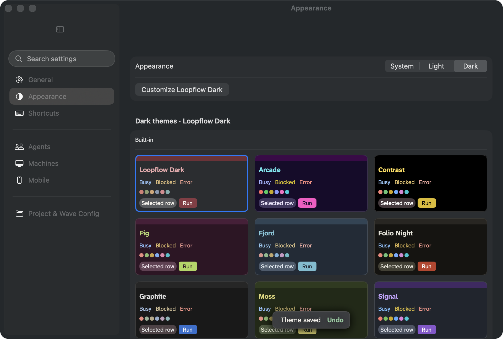
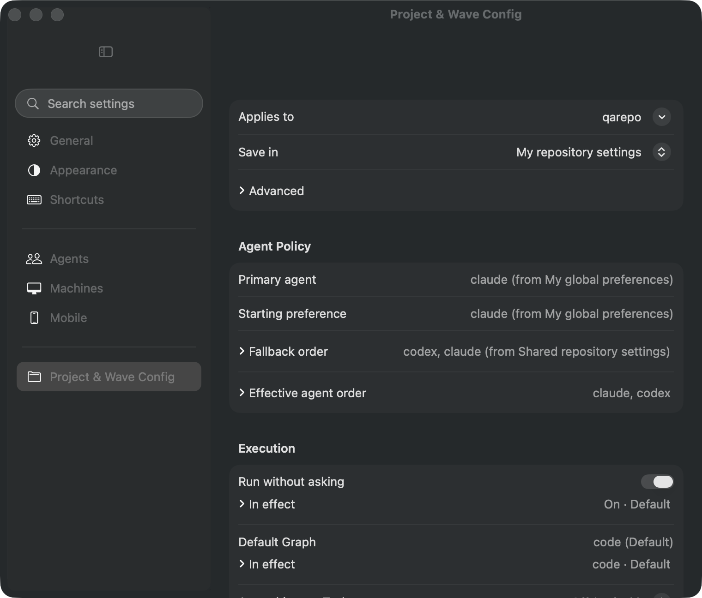
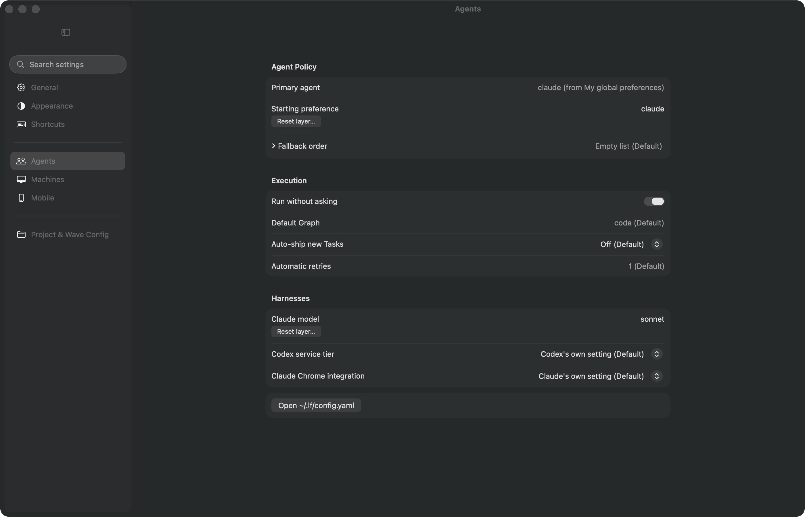
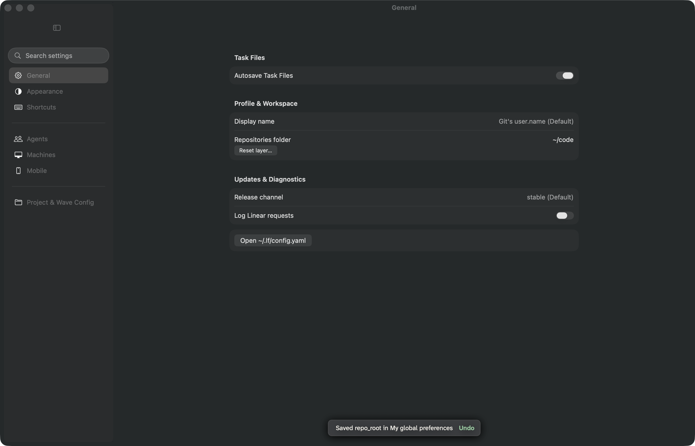

Branch build of 960172a56e plus the fixes below. Private Machine /tmp/lfq66 (own HOME, LF_HOME, branch lf server run), disposable repository qarepo with a shared merge_method: squash and agents: [codex, claude], and global default_agent: claude, claude.model: sonnet. Isolated bundle com.loopflow.mac.qa1066r3.dev with .lf/qa/QAHook.swift, opened behind other windows on an unlocked display; windows captured with screencapture -l. Rounds 1–2 (locked display, protocol checks) are in git history.
| Scenario | What I saw | Result |
|---|---|---|
| Open ⌘, Settings, General (Light) | Display name, Repositories folder and Release channel read None (Default). | Fixed: they read Git's user.name, ~/src and stable (Default). |
| Agents pane | Auto-ship and Codex service tier read None (Default). | Fixed: Off (Default), Codex's own setting (Default), Chrome reads Claude's own setting (Default). |
| Project & Wave Config | Applies to showed only a chevron, with no checkout name. Selecting the pane highlighted the divider above it. | Fixed: Applies to · qarepo is a right-aligned menu like Save in. Each divider is now its own unselectable row. |
| Values in effect | Fallback order: codex, claude (from Shared repository settings). Primary agent: claude (from My global preferences). Run without asking: On · Default. | Works |
| Dark mode via Appearance segment | Wrote theme: Loopflow Dark, the window turned dark at once and showed Theme saved · Undo. | Works |
| Compact (min ≈760 pt) and wide (1400×900) | Compact long values fit without clipping. Wide caps the form width and centers it. | Works |
| Edit Repositories folder from its new prompt | Typed ~/code and pressed Return. repo_root: ~/code was written and the row showed a value plus Reset. | Works |
| Checks | scripts/test_desktop.sh --filter 'SettingsWorkflowTests|ConfigurationSettingsTests|ContextSettingsWorkflowTests|ThemeWorkflowTests|DesignDisciplineTests': 25 passed. cargo test -p loopflow-execution --lib config::: 113 passed. Clippy -D warnings was clean. The catalogue and server-schema fixture tests passed. | Pass |
catalog.rs: optional unset phrase per definition, carried on the wire (fixtures updated); Swift decodes it as a required nullable key and shows it for a null default.ScopedSettings.swift: Applies to shows its checkout.SettingsWindow.swift: sidebar dividers are separate, unselectable rows.ScopedSettingRow.swift: “Reset layer…” → “Reset…”; In effect uses the same text as the row.








NavigationSplitView.